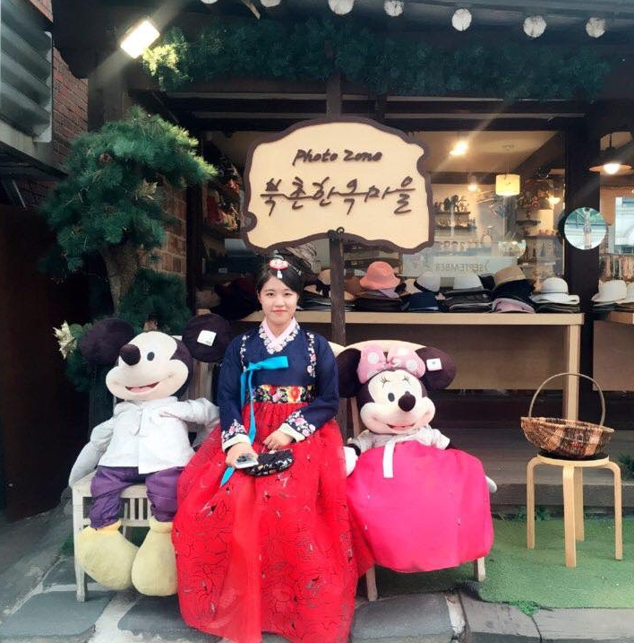

I am a Product Designer from San Diego with great interests in the intersections of Biology and Technology.
I am graduating from UC San Diego in December 2019 with B.S degree in Humane Biology and Cognitive Science with a focus on Human-Computer Interaction.
At San Diego, I learned two fields including Biology and Human-Computer Interaction and I am really interested in the center for health design’s mission which is to foster human-technology teamwork
in healthcare by taking a people-centered approach to health’s greatest challenges.
my free time, I like singing, listening to new music, trying new food, exploring with friends, cooking and discovering new recipes.
